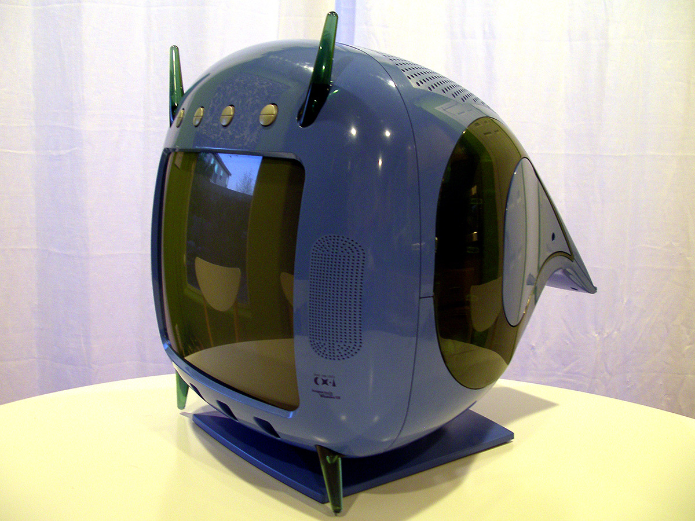
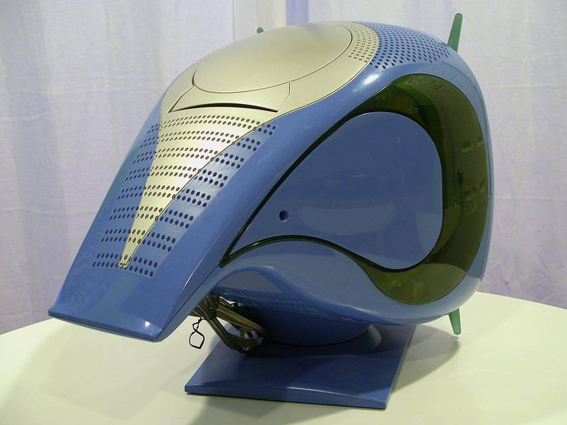
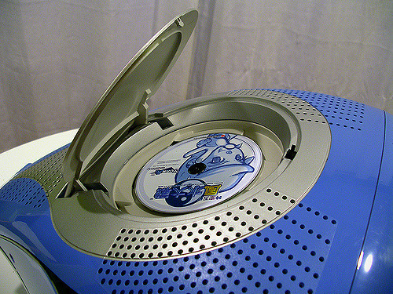
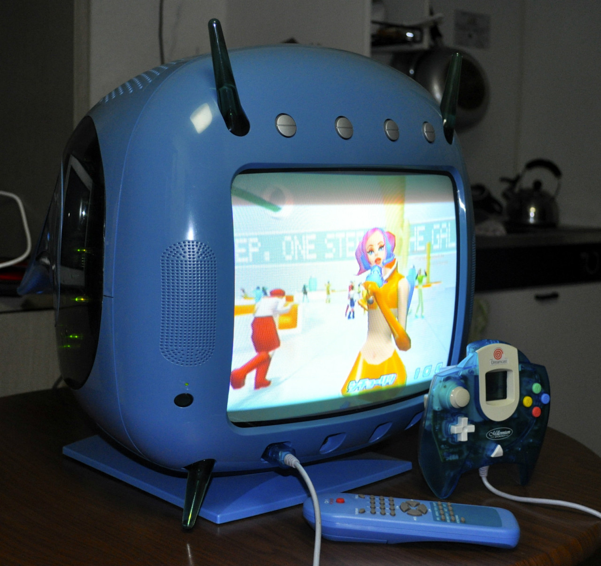

Divers 2000 CX-1 (2000)
“TV set sold only in Japan that included a working 14-inch TV screen, an in-built Sega Dreamcast console and, as packed-in accessories, the Dreamcast’s camera, a specially-branded controller, keyboard and remote control.”